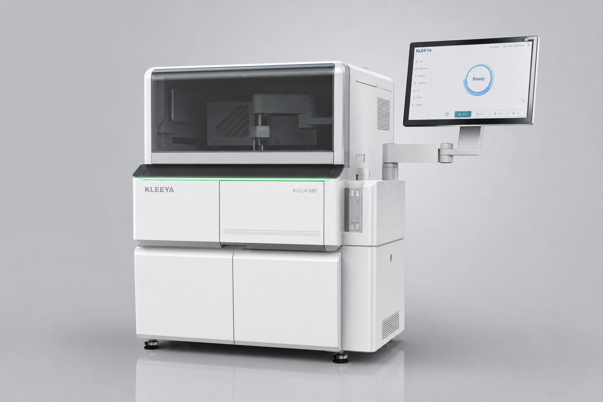
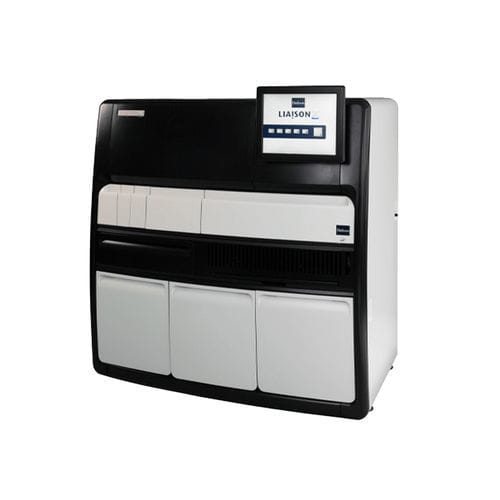

По таблице НПО: MagnoLIA — 224 кюветы, 120 т/ч, 16 реагентов, 96 проб. KleeYa — 500 кювет, 120 т/ч, 16 реагентов, 72 пробы. Паритет по скорости и реагентам, разница — в кюветах и открытости.


| Параметр | KLEEYA (НПО) | MagnoLIA (НПО) | Вывод |
|---|---|---|---|
| Кюветы | 500 | 224 | KLEEYA 2.2× |
| Тестов / час | 120 | 120 | Паритет |
| Реагентов | 16 | 16 | Паритет |
| Образцов | 72 | 96 | MagnoLIA +33% |
| Открытость | Открытая 170 CE, R&D редактор | Закрытая Алкор (Россия) | KLEEYA свобода vs локальная |
| Страна / Сервис | Венгрия/Германия • НПО ДС | Россия • Алкор Био | Оба — локальная поддержка |
Паритет 120 т/ч и 16 реагентов. Выбирайте по кюветам и открытости: нужен walk-away и EU-панели — KLEEYA (500 кювет). Нужна российская закрытая система с 96 пробами — MagnoLIA.